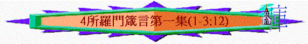

|
所羅門箴言第一集 |
所羅門箴言第二集 |
所羅門箴言第三集 |
其他人的言語附篇 |
|
1 - 9 |
10-24 |
25-29 |
30-31 |
一.概覽
1.特別之處
「我兒，要聽你父親的訓誨，不可離棄你母親的法則（或作：指教）；」1:8
「我兒，惡人若引誘你，你不可隨從。」1:10
「我兒，要謹守你父親的誡命；不可離棄你母親的法則（或作：指教），」6:20
「眾子啊，現在要聽從我，因為謹守我道的，便為有福。」8:32
∼箴1-9是所羅門所寫的，特別的地方是多「我兒」、「我」、「你」、「子」、「父親」、「母親」等字眼，而9章以後則少這些字眼了
2.主要內容
「我兒，要聽你父親的訓誨，不可離棄你母親的法則（或作：指教）；」1:8
∼是父母對兒女的訓誨(instruction)及法則(law)
∼作者用父親的角度向世人表達了訓誨與法則，目的是要
3.常用方法
A.直接的教導
「我兒，要聽你父親的訓誨，不可離棄你母親的法則（或作：指教）；」1:8
∼多用「要」、「不可」直接教導的方式
B.得益的鼓勵
「因為這要作你頭上的華冠，你項上的金鍊。」1:9
∼也解釋了若人遵守的益處，作鼓勵人繼續持守
C.反面的例子
「敬畏耶和華是知識的開端；愚妄人藐視智慧和訓誨。」1:7
∼1-9章也描述愚妄人不守訓誨帶來的反面例子，作為讀者提醒
D.屬靈的關鍵
∼而能作智慧人，不作愚妄人的關鍵是要敬畏神，所以1-9章也提及很多關乎敬畏神的事情
E.不斷的重覆
「我兒，你若領受我的言語，存記我的命令，」2:1
「我兒，不要忘記我的法則（或作：指教）；你心要謹守我的誡命；因為他必將長久的日子，生命的年數與平安，加給你。」3:1-2
「眾子啊，要聽父親的教訓，留心得知聰明。因我所給你們的是好教訓；不可離棄我的法則（或作：指教）。」4:1-2
「我兒，要留心我智慧的話語，側耳聽我聰明的言詞，」5:1
「我兒，你要遵守我的言語，將我的命令存記在心。遵守我的命令就得存活；保守我的法則（或作：指教），好像保守眼中的瞳人，」7:1-2
∼作者不斷重覆要人謹守存記神的話及帶來的益處的人容
二.內容
1.第一篇訓誨----警告：勿隨惡人引誘(1:10-19)
「我兒，惡人若引誘你，你不可隨從。」1:10
A.害人奪物的引誘
「我們好像陰間，把他們活活吞下；他們如同下坑的人，被我們囫圇吞了；我們必得各樣寶物，將所擄來的，裝滿房屋；」1:12-13
a.別人的提出----「他們若說」 ----是他們提出先
b.一同的行動----「與我們同去」----集體行動，不是單是你一人
c.惡謀的己定----「我們要埋伏」----已定下計謀，萬無一失
d.財利的引誘----「我們必得各樣寶物」
B.應當必要的回應
「我兒，不要與他們同行一道，禁止你腳走他們的路。」1:15
a.堅決的決心----「不要與他們同行一道」
b.個人的克制----「禁止你腳走他們的路」
C.仍繼續行的惡果
「這些人埋伏，是為自流己血；蹲伏，是為自害己命。凡貪戀財利的，所行之路都是如此；這貪戀之心乃奪去得財者之命。」1:18-19
2.第二篇訓誨----呼籲：當受教而回轉
A.回轉的呼喊
「智慧在街市上呼喊，在寬闊處發聲，在熱鬧街頭喊叫，在城門口，在城中發出言語，說：你們愚昧人喜愛愚昧，褻慢人喜歡褻慢，愚頑人恨惡知識，要到幾時呢？你們當因我的責備回轉；我要將我的靈澆灌你們，將我的話指示你們。」1:20-23
∼作者用擬人法將「智慧」比喻為人，他在街上呼喊，渴望愚昧人回轉
B.頑梗的回應
a.喜愛愚昧
「說：你們愚昧人喜愛愚昧，褻慢人喜歡褻慢，愚頑人恨惡知識，要到幾時呢？」1:22
b.不肯聽從
「我呼喚，你們不肯聽從；我伸手，無人理會；」1:24
c.輕棄勸戒
「反輕棄我一切的勸戒，不肯受我的責備。」1:25
d.恨惡知識
「因為，你們恨惡知識，不喜愛敬畏耶和華，」1:29
e.不敬真神
C.對照的結果
a.愚昧人----遭遇驚恐
「你們遭災難，我就發笑；驚恐臨到你們，我必嗤笑。」1:26
b.受教人----必得安然
「愚昧人背道，必殺己身；愚頑人安逸，必害己命。惟有聽從我的，必安然居住，得享安靜，不怕災禍。」1:32-33
3.第三篇訓誨----鼓勵：求智慧的益處(2)
A.求智慧的途徑
a.聽
「我兒，你若領受我的言語，存記我的命令，側耳聽智慧，專心求聰明，」2:1-2
(1)領受言語----接受
(2)存記命令----謹記
(3)側耳聆聽----留心
b.求
「側耳聽智慧，專心求聰明，呼求明哲，揚聲求聰明，」2:2-3
(1)專心求聰明----專心
(2)呼求明哲 ----謙卑
(3)揚聲求聰明----渴求
c.找
「尋找他，如尋找銀子，搜求他，如搜求隱藏的珍寶，」2:4
(1)尋找銀子 ----看為寶
(2)如搜求隱藏的珍寶----更進深
B.追求智慧的益處
a.明白敬神的真理
「你就明白敬畏耶和華，得以認識神。」2:5
∼敬神的原因，因為人認識神以下事情：
(1)智慧是從父神而來
「因為，耶和華賜人智慧；知識和聰明都由他口而出。」2:6
(2)神為敬虔人留智慧
「他給正直人存留真智慧，給行為純正的人作盾牌，為要保守公平人的路，護庇虔敬人的道。」1:7-8
b.明白一切的善道
∼人追求智慧，不單可以認識神，更能明白人世間一切善美的道理，這些道理帶來的果效是
(1)深入心靈
「智慧必入你心；你的靈要以知識為美。」2:10
(2)捍衛全人
「謀略必護衛你；聰明必保守你，」2:11
(3)脫離惡人
(A)乖謬的人
「那等人捨棄正直的路，行走黑暗的道，歡喜作惡，喜愛惡人的乖僻，在他們的道中彎曲，在他們的路上偏僻。」2:13-15
(B)淫亂的人
「智慧要救你脫離淫婦，就是那油嘴滑舌的外女。他離棄幼年的配偶，忘了神的盟約。他的家陷入死地；他的路偏向陰間。凡到他那裡去的，不得轉回，也得不著生命的路。」2:16-19
(a)油嘴滑舌
(b)離棄配偶
(c)忘記盟約
(d)離棄生命
c.使人行善道路
「智慧必使你行善人的道，守義人的路。正直人必在世上居住；完全人必在地上存留。」2:20-21
∼智慧不單使人明白善道，更使人行出善道，至終得在地存留
4.第四篇訓誨----教導：以神為中心(3:1-12)
∼3:1-12包括了6首四行詩，每2節有4行，所有單節是「要」、「不要」、「可」、「不可」；雙節是解釋
∼而3:1-12的「他」應指神，人在生活中要謹記有神，要尊榮敬畏及倚靠神，神也必將福氣加給人
A.不忘記神的法則
「我兒，不要忘記我的法則（或作：指教）；你心要謹守我的誡命；因為他必將長久的日子，生命的年數與平安，加給你。」3:1-2
∼人若謹守及不忘神的誡命，神必將平安與日子加給他們
B.不離開慈愛誠實
∼繫在頸項及刻在心版代表人不可離開慈愛與誠實，要放在心上，成為人行事為人的法則
∼這樣必在神和世人眼前蒙恩寵
C.專心仰賴耶和華
「你要專心仰賴耶和華，不可倚靠自己的聰明，在你一切所行的事上都要認定他，他必指引你的路。」3:5-6
D.要敬畏神離惡事
「不要自以為有智慧；要敬畏耶和華，遠離惡事。這便醫治你的肚臍，滋潤你的百骨。」3:7-8
E.以獻土產尊榮神
「你要以財物和一切初熟的土產尊榮耶和華。這樣，你的倉房必充滿有餘；你的酒醡有新酒盈溢。」3:9-10
F.不可輕看神管教
「我兒，你不可輕看耶和華的管教（或作：懲治），也不可厭煩他的責備；因為耶和華所愛的，他必責備，正如父親責備所喜愛的兒子。」3:11-12